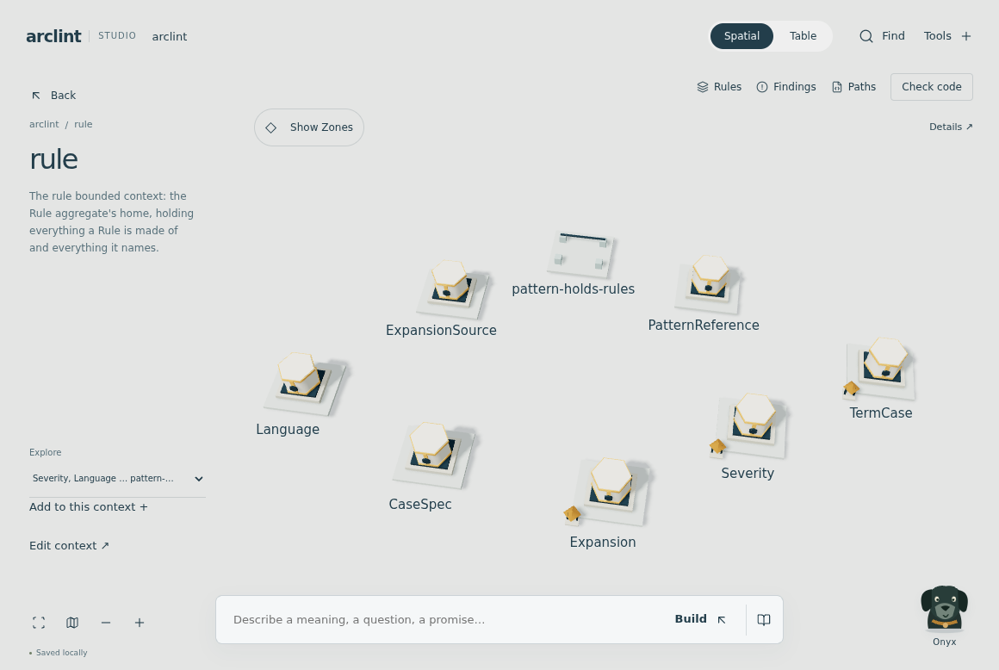
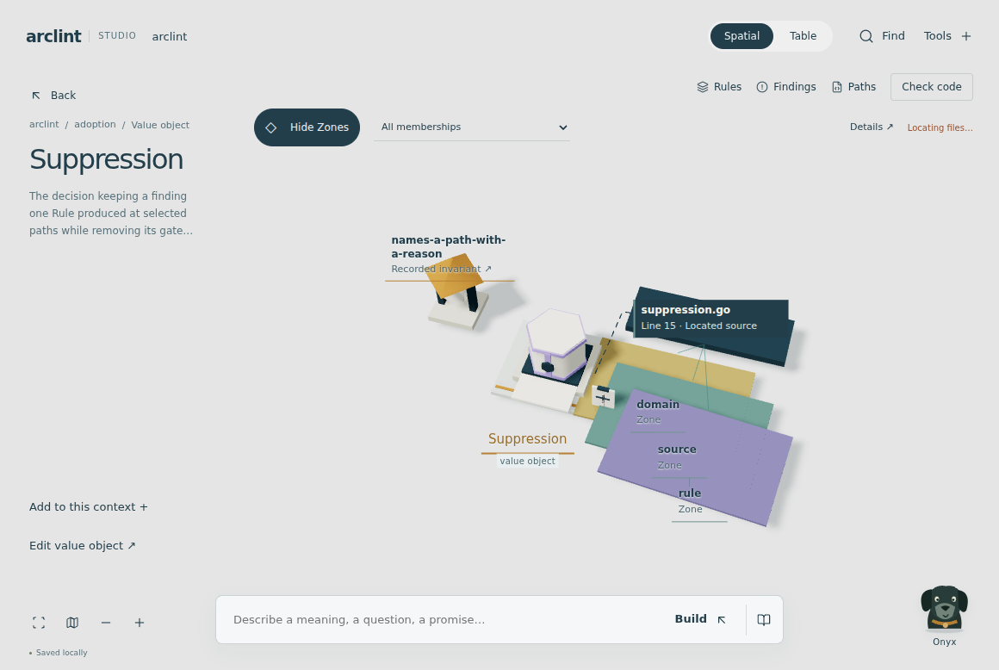

A shared place, with understandable protection.
One place. Evidence attached.
The project is the nation. Bounded contexts are cities with their own language. Aggregates are workshops responsible for consistency. Entities are named participants whose identity survives change. Value objects are sealed artifacts defined by their contents. Zones group files across those boundaries. Rules govern a stated Scope. These mappings stay the same in Spatial and Table.
What changed after the live review
Remove the enclosing context tray after entry. Remove duplicate definitions and automatic detail panels. Remove the Domain, Zones and Findings tabs. Protection and inspection belong on the same objects. One optional Zone overlay adds file memberships; selected details contain the full record.
01The project is a nation
A context can be an emblem on the map and a different place when entered. Its recorded composition supplies its character. In ArcLint, the Rule aggregate gives rule its civic landmark; this does not infer software centrality.
02Enter the city
Travel opens a distinct context scene. A map emblem can become an archway or civic landmark; domain entries occupy the available scene. No miniature container within another container, and no permanent reading panel.
03Protection belongs to an owner
A value object is a sealed artifact, not an identity-bearing household. An invariant is a standing guard over its recorded owner. An assertion is a checkpoint after its recorded operation. Both reveal the exact promise. Their presence does not claim that enforcement has been verified.
04Code explains overlapping Zones
At context level, colored membership markings attach to entries with located code. A single key names the Zones. Select an entry for its exact paths and overlapping memberships. A chosen Layer Rule states the dependency direction; missing associations never become fabricated connections.
05Inspection stays with the object
Inspection begins when the repository opens and repeats after source, Rule or Baseline changes. The pencil marks work in progress; defects and acknowledgement tags attach to the inspected object. The scene, selected subject and unfinished writing stay in place. Returned findings retain their path, Rule, time and status. Missing outcomes never become a green pass.
06Close the reading, keep the place
Details open only when requested. A single definition, useful Back navigation, and the same drafts in Table. On a phone, the reading temporarily takes priority over scene labels.
From the running application


Design council
Simulated lenses: Andrew Kim, Jony Ive, Dieter Rams and Hideo Kojima. Opening a place must change the experience; material and form need a purpose. Reject ornament masquerading as architecture.
Three adversarial lenses
Don Norman: actions must predict what opens. Edward Tufte: distinguish meaning, policy and measured results. Kevin Lynch: preserve identities and the way back, while each depth can change representation.
Rendered verification
Verified on September 14: 106 unit tests passed. All 37 affected browser journeys passed across the integration run and focused rerun, including automatic inspection, exact file and Zone membership, preserved drafts, phone navigation and keyboard focus. The repository finish gate also passed. The screenshots above use the actual ArcLint project; passing these checks does not claim that every architectural Rule passed its inspection.
Schematic storyboard, not a screenshot. Named perspectives are simulated critique, not claims that these people participated. ArcLint currently records five contexts; no sixth city or domain relationship is invented.